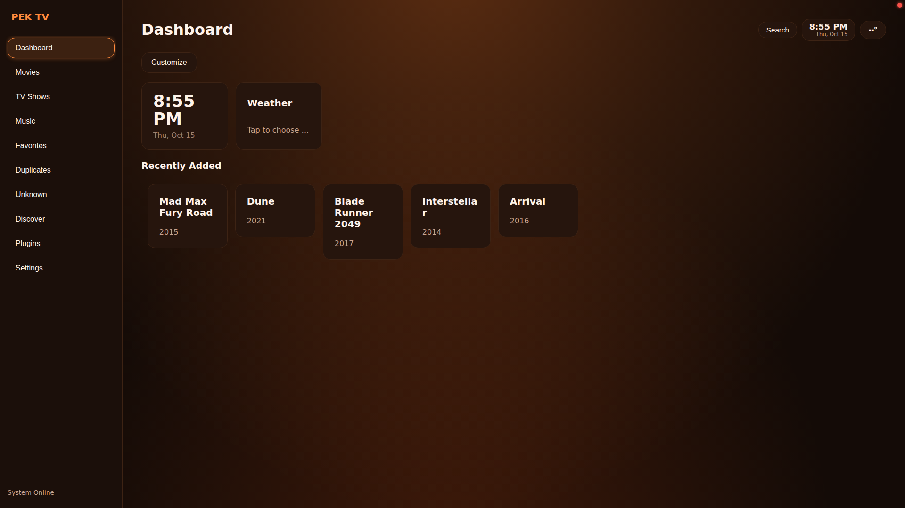
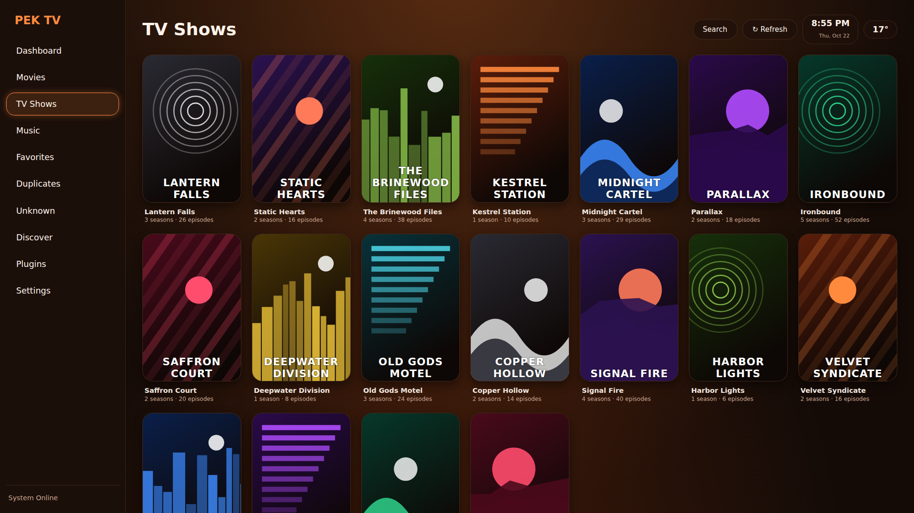
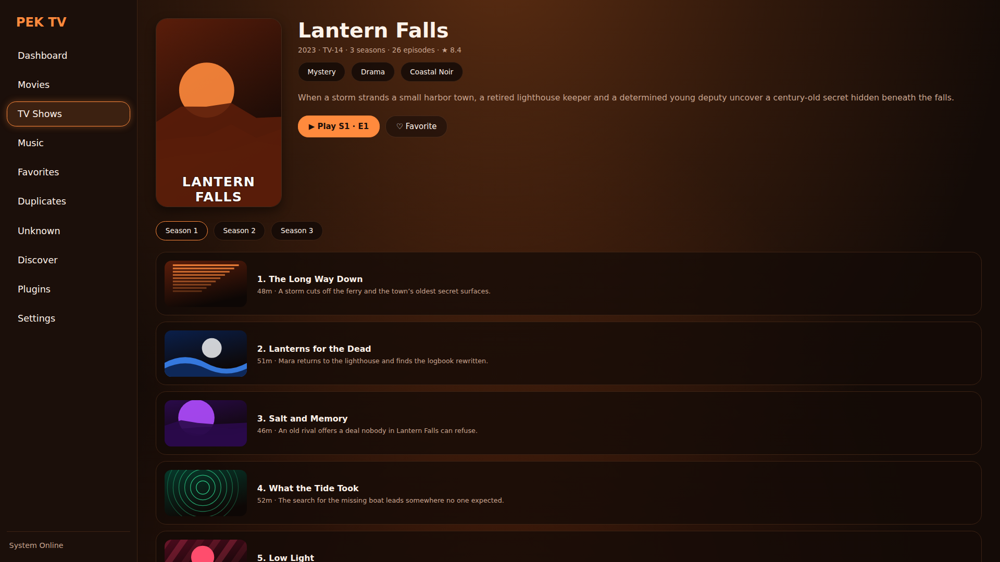
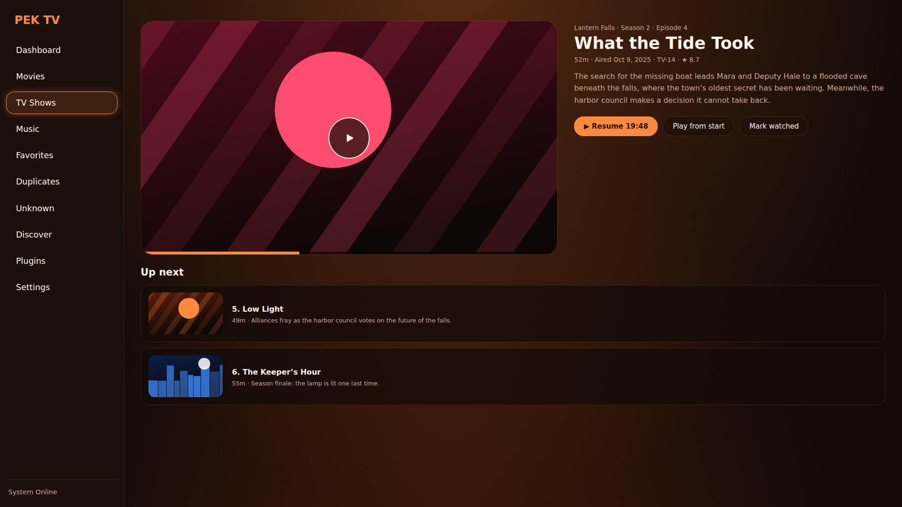
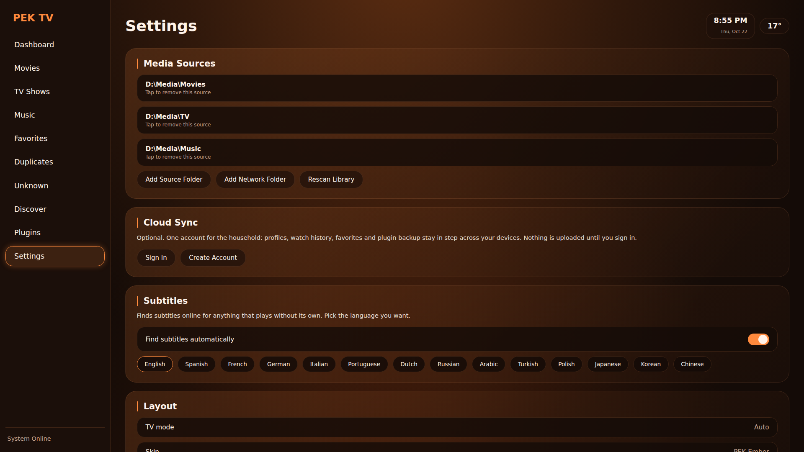
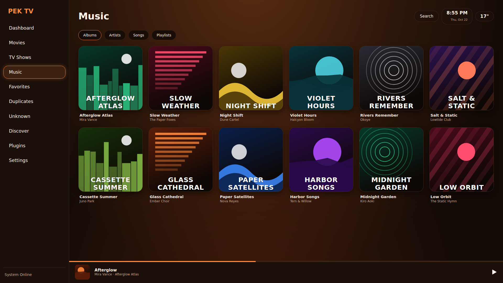
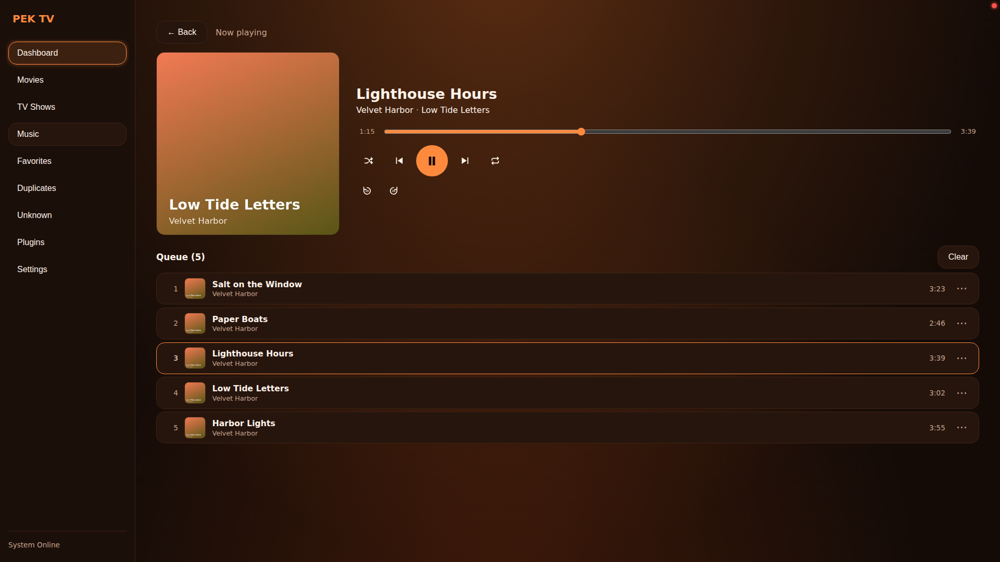

PEK TV
A media center that is simple for regular people and deep for power users. Your own library, plugins you can trust, and a screen that looks like it was made for the TV.
What it does
Everything below is in the code today.
Your library, everywhere
Scans local folders and network shares: SMB, NFS, FTP, WebDAV and UPnP/DLNA, with automatic discovery. Reads Kodi-style NFO files and artwork first, and asks TMDb only for what is missing.
A player that stays out of the way
libmpv on Android, the browser's player elsewhere. Automatic subtitles, Skip Intro / Skip Recap, and an Up Next card near the end of an episode.
Music from your own folders
Albums, artists, songs and playlists from the same folders as your movies, local or on a network share. Tags and cover art come straight from the files, with shuffle, repeat, a queue and a player bar. On Android, libmpv plays every format the library lists, including WMA, APE and WavPack. No streaming service, no account.
Built for the couch
A full D-pad / remote / gamepad mode with a 10-foot look, navigation sounds, and a performance mode for weak devices.
A dashboard you design
A home screen made of widgets you choose and order: Clock, Weather, Continue Watching, Recently Added, Favorites, and a shortcut tile for any installed plugin. Saved per profile.
Profiles and PEK Cloud
Netflix-style profiles with their own history, favorites and look. Optional cloud sign-in syncs history, resume points, favorites and settings between devices.
Skins
Install a skin from a .zip. Ships with PEK Ember (default), Green and Neon. Skins cannot run code or reach the network.
Sandboxed plugins
Plugins declare what they may do and run in a locked-down sandbox. Three trust tiers: Official, the PEK Store, and install-from-GitHub.
Live TV through plugins
A plugin can play live streams with a channel switcher, a guide and a now / next banner. The player does the work; the plugin only supplies data.
PEK plugins vs Kodi add-ons
PEK TV feels familiar if you have used Kodi, but plugins work differently on purpose.
| PEK TV plugins | Kodi add-ons (general) | |
|---|---|---|
| Plugin language | JavaScript UI in a sandboxed iframe, plus an optional restricted Python backend | Python scripts (and some binary add-ons) |
| Permissions | Declared in plugin.json and shown on the install screen. No permission listed means no access | No per-add-on permission model: add-on code generally runs with Kodi's own privileges |
| Sandbox | Third-party plugin UI cannot touch the app, cookies or storage. Backends must pass an automatic safety scan | Add-ons are not sandboxed from the app |
| Network access | Only the HTTPS hosts the plugin lists | Whatever the add-on's code opens |
| Where plugins come from | Official, the PEK Store, or owner/repo from GitHub (marked unverified) | Repositories and zip files |
| Look and feel | A plugin builds screens from PEK's own building blocks, so every plugin feels native on a TV and on a phone | Add-ons use Kodi's windows and list model |
Kodi's PVR clients play the role that the optional Live TV Guide plugin plays in PEK TV: a channel directory with now / next, fed by m3u streams.
Development outline
Where PEK TV has been and where it is going. It is in beta, so expect rough edges.
- Core. C++ backend with embedded Python, web UI, library scanner, NFO and artwork support, network sources.
- Plugins. Sandbox, permissions, the Python backend guard, install from .zip, then the three trust tiers (Official, PEK Store, GitHub).
- Look and feel. Skins and the skin installer, PEK Ember default look, TV mode, performance mode.
- Accounts. PEK Cloud: profiles, sync of history, resume points, favorites and settings; optional invite-only sign-up.
- Player features. Automatic subtitles, Skip Intro / Skip Recap, Up Next, live sessions for TV plugins.
- Music. The Music tab: albums, artists, songs, playlists and search, a Now Playing screen with a queue, and a player bar. Tags and covers are read from MP3, FLAC, Ogg, Opus and M4A files, on local folders and network shares. On Android the songs play in libmpv.
- Now. Customizable dashboard polish, music that keeps playing in the background on Android, more official plugins, public documentation.
- Next. Wider plugin APIs and a growing PEK Store.
Screenshots
PEK TV running at 1920×1080. Click any image to see it full size.














Read the code
PEK TV lives in one repository with two branches.
main
Backend, web UI, plugins, skins and cloud workers. Runs on Linux, Windows (MSYS2 / WSL) and Android through Termux.
android
Everything in main plus the Android app (Kotlin, libmpv, Chaquopy) and the GitHub Actions build.